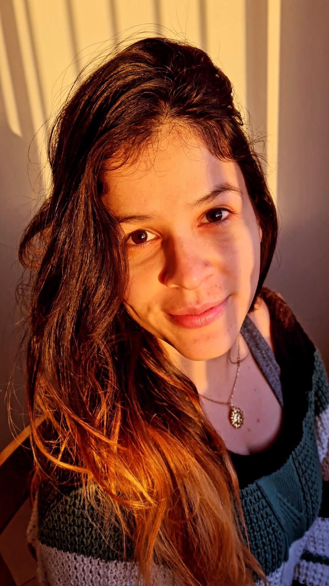

Marioxis Macías
Desenvolvedora Back-End

 Objetivo
Objetivo
- Sou mestre em oceanografia biológica e meu objetivo é me tornar uma desenvolvedora web do Back-End.
 Educação:
Educação:
- Graduação: Bachelor em Biologia - UC, Venezuela
- Postgrado: Mestre em Oceanografia Biologica- FURG, Brasil
- Postgrado: Doutoranda em Oceanografia Biologica (em andamento) - FURG, Brasil
 Projetos HTML:
Projetos HTML:
Skills:
- Tecnologia web
- HTML/CSS
- Estatistica computacional
- R
 Contatos:
Contatos:
Trabalhamos juntos?
- @mrx_macias